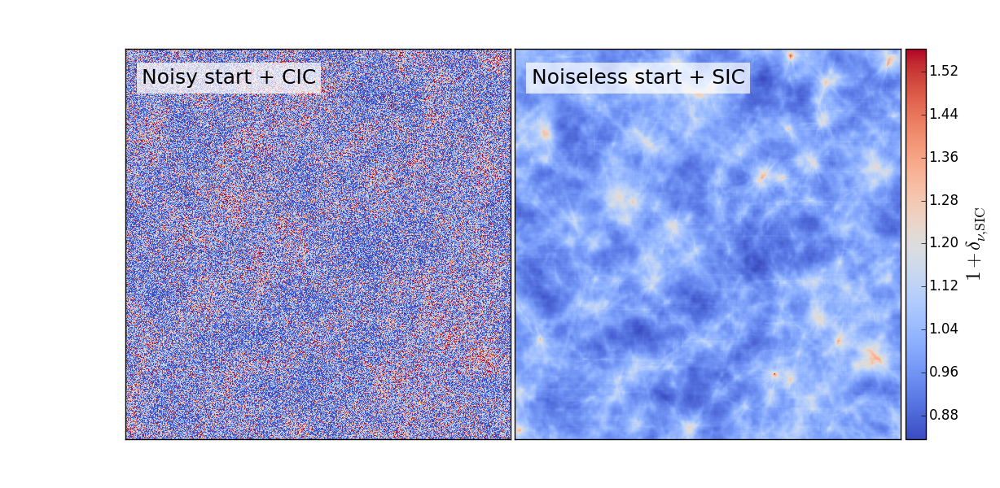
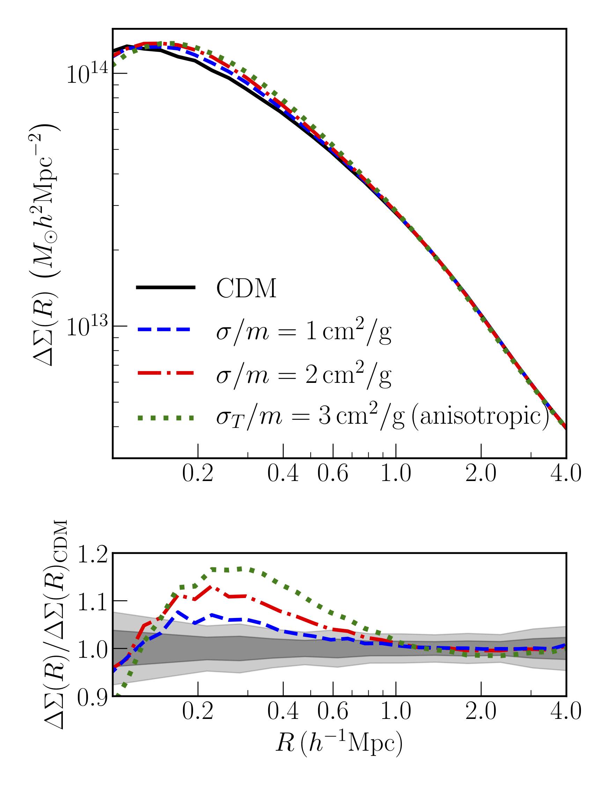

A large part of my research focuses on understanding the process of structure formation in the Universe, and using it to inform our models of fundmental physics. Here are some of the specific questions I have worked on:
Neutrino mass
Neutrinos are the lightest Standard Model particles, but the number density of relic neutrinos from the early Universe are high enough that they start affecting the formation and growth of structure in the Universe. To capture this effect fully, down to scales where the structure formation process is nonlinear, neutrinos need to be actively modeled in high resolution N-body simulations.

Dark Matter Self-interactions
